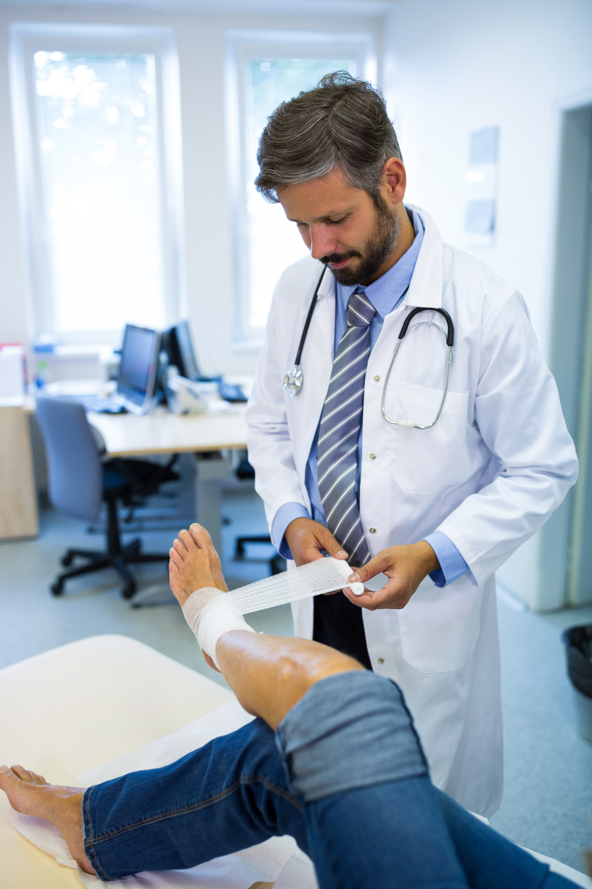

Cirujano Ortopédico en Puerto Vallarta
Cirugía ortopédica especializada en adultos. Prótesis de rodilla, prótesis de cadera y artroscopia con el Dr. Calvario, Traumatólogo y Ortopedista Naval con consultorio en Puerto Vallarta.
Cuándo un paciente adulto debe pensar en cirugía ortopédica
La cirugía ortopédica es la rama de la medicina que trata quirúrgicamente los padecimientos del sistema musculoesquelético: huesos, articulaciones, ligamentos, tendones y músculos. En adultos, las cirugías ortopédicas más comunes se relacionan con el desgaste articular (artrosis), las lesiones deportivas, las rupturas de ligamentos o meniscos, los problemas de hombro y las secuelas de fracturas mal consolidadas.
Muchos pacientes llegan al consultorio del Dr. Calvario en Puerto Vallarta tras meses o años probando antiinflamatorios, terapias físicas aisladas y tratamientos sin diagnóstico claro. El primer paso siempre es entender qué está pasando dentro de la articulación. Para ello se utilizan radiografías, resonancia magnética, ecografía articular o tomografía según el caso. Con el diagnóstico preciso se definen las opciones reales de tratamiento.
No todos los pacientes con dolor articular requieren cirugía. Una parte importante mejora con un plan conservador bien hecho: fisioterapia específica, infiltraciones cuando están indicadas, modificación de actividades, ortesis o pérdida de peso. La cirugía se reserva para casos donde el daño estructural impide una recuperación funcional por otras vías, o cuando el dolor y la limitación ya afectan seriamente la calidad de vida.
Cuando la cirugía está indicada, el Dr. Calvario explica el procedimiento propuesto, el tipo de implante si aplica, el tiempo de hospitalización aproximado, el proceso de recuperación y los cuidados en casa. La transparencia antes de la cirugía reduce la ansiedad y mejora los resultados. Los pacientes en Puerto Vallarta valoran especialmente este enfoque: nada de sorpresas, nada de pasos opacos.
Las tres áreas principales dentro de la cirugía ortopédica en adultos que atiende el Dr. Calvario son la prótesis de rodilla, la prótesis de cadera y la artroscopia de rodilla y hombro. Cada una tiene su propia página con información detallada del procedimiento, indicaciones, proceso de recuperación y preguntas frecuentes.
Cirugías ortopédicas especializadas para adultos
Tres procedimientos principales dentro de la cirugía ortopédica del adulto. Cada uno con su propio protocolo, equipo e implantes específicos.
 Reemplazo articular
Reemplazo articular
Prótesis de Rodilla en Puerto Vallarta
Reemplazo total o parcial de rodilla para pacientes con artrosis avanzada, dolor persistente y limitación funcional.

Reemplazo articularPrótesis de Cadera en Puerto Vallarta
Reemplazo de cadera para pacientes con coxartrosis, necrosis avascular o fracturas de cuello femoral que han perdido movilidad.
 Cirugía mínimamente invasiva
Cirugía mínimamente invasiva
Artroscopia de Rodilla y Hombro en Puerto Vallarta
Cirugía articular por vía mínimamente invasiva para lesiones de menisco, ligamento cruzado y manguito rotador.
Lo que distingue a la cirugía ortopédica con el Dr. Calvario
Diagnóstico certero
Antes de cualquier cirugía, un estudio completo del caso. Sin prisas, sin diagnósticos improvisados.
Implantes certificados
Uso exclusivo de prótesis e implantes con respaldo internacional, adaptados a la anatomía del paciente.
Seguimiento real
Contacto directo con el Dr. Calvario después de la cirugía, no delegado a un asistente sin información.
Enfoque médico-naval
Protocolos clínicos ordenados y disciplina en cada paso del proceso, desde la valoración hasta la rehabilitación.